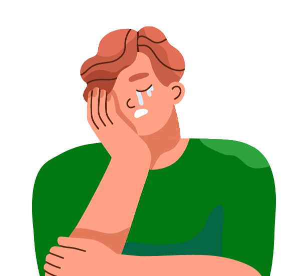
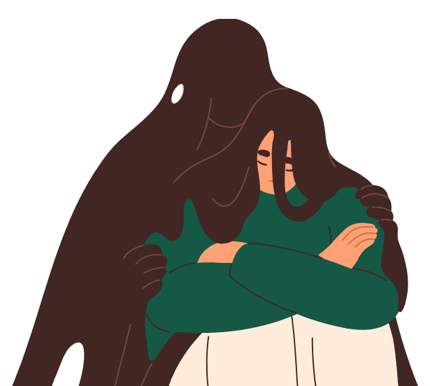

9
번아웃 증후군
번아웃 증후군이란,
'번아웃(burnout: 극도의 피로, 연료 소진)'과 '증후군(Syndrome)'의 합성어로,
어떤 일에몰두하여 모든 에너지를 쏟은 사람이 극도의 피로를 느끼며 일상생활에서 무기력한 상태가 지속되는 것을 말합니다.
번아웃 증후군 결과
0점 – 15점
일반적인 수준의 스트레스를 경험하고 있는 상태
16점 – 35점
초기단계 수준의 스트레스를 경험하고 있는 상태
36점 – 60점
중증 수준의 스트레스를 경험하고 있는 상태
61점 이상
매우 심각한 수준의 스트레스를 경험하고 있는 상태
당신은 중증 수준의 번아웃 증후군을 보이고 있는 상태입니다.
일적인 면에서는 인정을 받을 수 있지만 충분한 휴식, 취미생활, 대인관계 등의 개념 없이 지속적으로 일만 생각하는 단계입니다. 주변인과의 갈등에 날카롭게 반응 하며, 일에 방해가 되는 사회적인 어떤 관계도 맺지 않거나 불편함을 겪게 됩니다.
업무로 인한 스트레스를 술이나 약물, 쇼핑, 폭식 등에 의지해 해결하기도 합니다. 이상함을 감지한 주변에서 관심을 갖고 나의 상태에 대해 물어보기 시작합니다. 고민을 나눌 수 있는 가까운 친구나 동료, 또는 지인이 있다면 답답한 마음을 표출하는 것도 많은 도움이 됩니다. 다만, 혼자서 극복하기가 어렵다고 생각되면 전문가의 도움을 받아보시길 권합니다.
일반적 스트레스와 번아웃 증후군의 차이
스트레스 (Stress)
지나치게 일에 몰입해서 생긴다
감정 반응이 격해진다.
행동이 많아지거나 급해진다.
에너지가 점차 소진된다.
불안에 이를 가능성이 높다.
신체 증상(두통, 소화불량 등)이 심해진다.
번아웃(Burnout)
일에 몰입할 수가 없다.
감정 반응이 둔해진다.
좌절감이나 무기력으로 행동이 줄어든다.
의욕, 희망, 생각이 사라진다.
혼자라는 생각이나 우울감에 빠지기 쉽다.
정서적 증상(우울감, 무기력 등)이 심해진다.